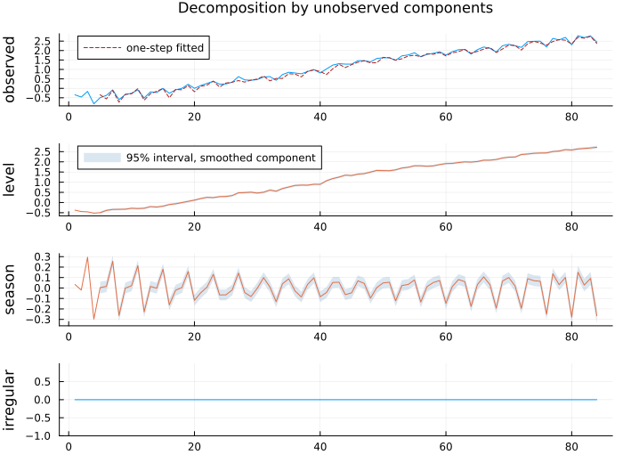

API: Unobserved Components
A series split by a fitted model into a level, a slope, seasonal, cycle and autoregressive components and an irregular, each with its own variance and recovered with a standard error. The models run on the TimeVaryingSSM filter and smoother of API: State Space; the task-oriented guide is Manual: Unobserved Components.
These are also called structural time series models in the literature (Tsay 2010, §11.3.5; Harvey 1989). That is unrelated to the structural VAR of API: Structural VAR, which identifies shocks in a multivariate system. The clash of names is unfortunate and predates both.
using TSAnalytics, Plots
y = log.(dataset("jj").value) # quarterly J&J earnings per share
m = fit_uc(y; level = :stochastic, seasonal = 4)
plot(state_decomposition(m); size = (700, 520))
The level and the seasonal carry 95% bands for the smoothed component; the irregular, a residual, does not. This is the model of Tsay's Example 11.3, and its two standard deviations agree with his published S-PLUS/SsfPack estimates to about 1e-7.
Fitting
TSAnalytics.fit_uc — Function
fit_uc(y; level=:none, trend=:none, seasonal=nothing, seasonal_kind=:dummy,
harmonics=nothing, seasonal_stochastic=true, cycle=:none,
damped_cycle=false, ar=0, irregular=true, exog=nothing,
init_kappa=1e6, params=nothing, fixed=nothing,
initial_state=nothing, initial_cov=nothing) -> UCModelFit an unobserved-components (structural time series) model by maximum likelihood,
y_t = μ_t + γ_t + c_t + ψ_t + x_t'β + ε_t
level seasonal cycle AR regression irregulareach component with its own variance, then recover every component, with a standard error, by the smoother (uc_decomposition). Unlike stl_decompose, which splits a series by a filter you choose, this splits it by a fitted model, so each component comes with an interval.
The specification is explicit. level, trend and cycle each take :none, :deterministic or :stochastic; there are no Boolean or string shortcuts, because the reference's are traps (level=True gives a deterministic level, and its string names disagree about whether an irregular is present). The convenience constructors uc_local_level, uc_local_linear_trend, uc_random_walk, uc_smooth_trend and uc_bsm each state their expansion.
seasonal: the period, withseasonal_kind = :dummy(period − 1states, one sum-to-zero disturbance) or:trig(harmonicsrotating pairs, defaultfloor(period/2), one common variance);seasonal_stochastic = falsemakes it fixed.cycle: a stochastic or deterministic cycle with estimated frequency in(0, π);damped_cycle = trueadds a damping factor in(0, 1).ar: an AR(ar) component, kept stationary.exog: regressors with fixed coefficients estimated by maximum likelihood. For coefficients that drift over time usefit_arimax(…; model = :tvss), which already does it.
Initialisation is approximate diffuse, deliberately. The non-stationary states get a prior variance init_kappa = 1e6; the AR block gets its own stationary covariance. The package does have an exact diffuse filter (kalman_filter_diffuse), and its absence here is not an oversight: the reference uses approximate diffuse, matching it is what makes the numbers comparable, and the exact filter has no smoother. init_kappa is a prior, not a technicality – the likelihood depends on it. As in the reference, the first period for each diffuse state is left out of the likelihood – one period per non-stationary state, with any prior. initial_state/initial_cov replace the prior with a known one (R's StructTS uses y[1] and 1e4 var(y)).
Variances are fitted on the log scale, so a boundary solution is a small positive number you can see – never clipped to zero. (R's StructTS clips with pmax(·, 0), so a true boundary and a clipped negative estimate look the same.)
params evaluates the model at given natural parameters, in coefnames order, without optimising (the reference's smooth); fixed pins some parameters by name (Dict("sigma2.level" => 0.0, …)) and estimates the rest.
A specification with no disturbance at all – every component deterministic and no irregular – is refused rather than patched.
julia> using TSAnalytics, DelimitedFiles
julia> nile = readdlm(TSAnalytics.NILE, ','; skipstart=1)[:, 2];
julia> m = fit_uc(nile; level=:stochastic);
julia> round(m.loglik, digits=4)
-632.5377
julia> round.(m.params, digits=1)
2-element Vector{Float64}:
15108.3
1463.5TSAnalytics.UCModel — Type
UCModel <: StateSpaceModelA fitted unobserved-components model, returned by fit_uc. coef, coefnames, vcov, stderror, loglikelihood, aic, bic, nobs, residuals (one-step prediction errors), fitted (one-step predictions), and forecast/predict. Components and their standard errors come from uc_decomposition.
Named models
TSAnalytics.uc_local_level — Function
uc_local_level(y; kw...) -> UCModelfit_uc(y; level = :stochastic, irregular = true) – the local level model: a random-walk level observed with noise.
TSAnalytics.uc_local_linear_trend — Function
uc_local_linear_trend(y; kw...) -> UCModelfit_uc(y; level = :stochastic, trend = :stochastic, irregular = true).
TSAnalytics.uc_random_walk — Function
uc_random_walk(y; kw...) -> UCModelfit_uc(y; level = :stochastic, irregular = false) – a random walk with no irregular; the series is its own level.
TSAnalytics.uc_smooth_trend — Function
uc_smooth_trend(y; kw...) -> UCModelfit_uc(y; level = :deterministic, trend = :stochastic, irregular = true) – the level moves only through a slowly varying slope, giving a smooth trend.
TSAnalytics.uc_bsm — Function
uc_bsm(y, period; kw...) -> UCModelThe basic structural model: fit_uc(y; level = :stochastic, trend = :stochastic, seasonal = period, seasonal_kind = :dummy, irregular = true) – R's StructTS(type = "BSM").
Components
state_decomposition and diagnostic_plot(m) also take a UCModel; both are documented in API: Plotting.
TSAnalytics.uc_decomposition — Function
uc_decomposition(m::UCModel) -> UCDecompositionEach component's smoothed path and its standard error, read from the smoother's state mean and covariance: what a model-based decomposition gives that stl_decompose cannot. The components sum, with the irregular, to the series exactly.
The standard errors are NaN over the first periods that the likelihood leaves out (one per diffuse state): there the approximate-diffuse prior's 1e6 variance makes the smoothed variance a difference of huge numbers, and its value is noise – negative, in the reference's own output.
TSAnalytics.UCDecomposition — Type
UCDecompositionThe smoothed components of a fitted UCModel, each with its standard error (nothing for a component the model does not have): level, trend, seasonal, cycle, ar (with *_se), regression (fixed coefficients, so no standard error), irregular (y minus every other component), names (the components present, in order) and period.